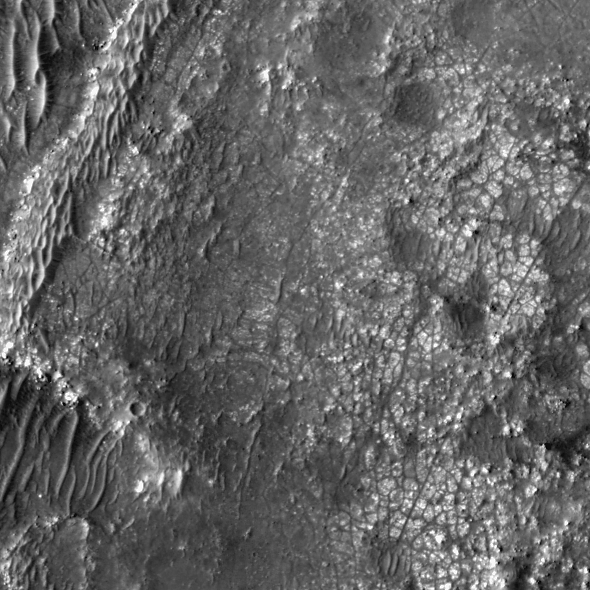

Sol 16 is drawn in red between the Sol 15 and Sol 16 endpoints. Other drives are white. Drag or use arrow keys to pan. Scroll, pinch or use plus and minus to zoom. Home restores the four drives. The drive index selects individual segments.
